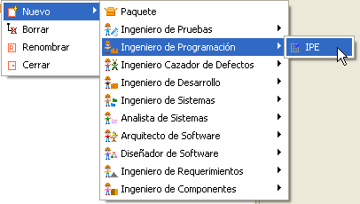
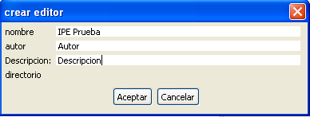
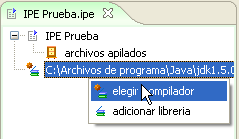
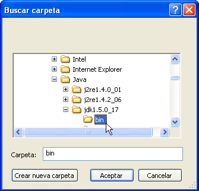
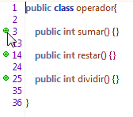
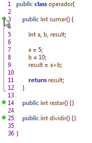
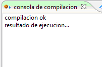

Plugin IPE
El Ambiente de Programación Integrado IPE es un Framework para realizar la tarea de codificación y compilación de código. Agiliza la labor del Ingeniero de programación, al proveer integración directa de las Herramientas Editor de Código y Compilador,
Colosoft soporta la programación en lenguaje java, utilizando un JDK 1.6.x instalado en el sistema el editor puede resaltar la sintaxis del lenguaje en uso, verificar errores de codificación y compilar el código editado.
Creación de un nuevo entorno de Programación: Para utilizar el Framework IPE debe crear una instancia nueva del entorno mediante el Plugin IPE. Seleccione en el Marco de Expresión: Nuevo, Ingeniero de Programación, IPE.

Figura 1. Creación de un entorno IPE
Ingrese los datos correspondientes al Entorno.

Barra de herramientas del Plugin IPE:

Figura 3. Elementos de creación del entorno
Configurar Compilador JAVA ® : para el funcionamiento correcto del plugin, debe indicarle a Colosoft la ubicación en disco del compilador de java (Carpeta Bin dentro los archivos de instalación del JDK 1.6.X).
Con una instancia abierta del entorno. Haga clic derecho sobre el item que referencia el compilador de java, dentro del marco del marco de Presentación

Figura 4. Eligiendo el compilador del entorno
Navegue hasta seleccionar la carpeta Bin Dentro de los archivos de instalación del JDK.

Figura 5. Ubicando el compilador JDK
Es importante que el JDK este instalado y configurado para funcionar dentro de su ambiente Windows, también es necesario que estén configuradas las variables de entorno para poder ejecutar la compilación de código.
Para mas información visite www.java.com
Nueva Clase: Seleccione el icono Nuevo para crear una clase vacía.

Figura 6. Creando una nueva clase
Escriba un nombre para a la nueva clase, dicho nombre será usado también para nombrar el archivo de código fuente. Ej. (Clase_Prueba.java).

Figura 7. Nombrado de la nueva clase
Colosoft genera una nueva clase vacía e inicia el editor de código.

Figura 8. Clase vacía despues de su creación
Importar Archivos de Código: Seleccione el botón Importar, como se muestra en la FIgura 9.

Figura 9. Importando código al editor
Seguidamente se abrirá una ventana de selección de archivos. Importe archivos .java que contengan código fuente.

Figura 10. Ubicando el código a importar
Editor: edite o inserte código a modo de texto, el editor de código de Colosoft permite trabajar cómodamente sobre el código resaltando con diferentes colores las palabras claves correspondientes al lenguaje de programación.

Figura 11. Coloreado de sintaxis en el editor de código
Colosoft también le permite resaltar módulos dentro del código mostrando llaves cuadradas al lado izquierdo del editor.

Figura 12. Agrupación de código
Oculte y Expanda Bloques de código: haga clic en los marcadores verdes ubicados en los extremos de la llave cuadrada para ocultar o desplegar código asociado a un mismo modulo.
 
Figura 13. Expansión y contracción de código
Compilador: Para utilizar el compilador de Java y verificar la ejecución del código haga clic sobre el botón Compilar ubicado en la esquina superior derecha del marco de expresión del Plugin IPE.

Figura 14. Compilando el código
En el Marco de Extensión bajo la pestaña "Consola de Compilación" puede observar el resultado de la compilación.
Corrija todos los errores que aquí se presenten.
Visualice los resultados que se muestren en la consola de Java

Guardar: Guarde los cambios realizados en el código editado sobre el archivo fuente de la clase que actualmente está abierto.

Figura 16. Guardar el código
Imprimir: Imprima el Código fuente desde el editor de código a su impresora, utilizando la opción Imprimir y el diálogo genérico de impresión.

Figura 17. Imprimir el código
Deshacer - Rehacer: Deshaga cambios realizados en el código mediante la opción Deshacer, y rehaga cambios previamente descartados mediante la opción Rehacer.

Figura 18. Rehacer un cambio